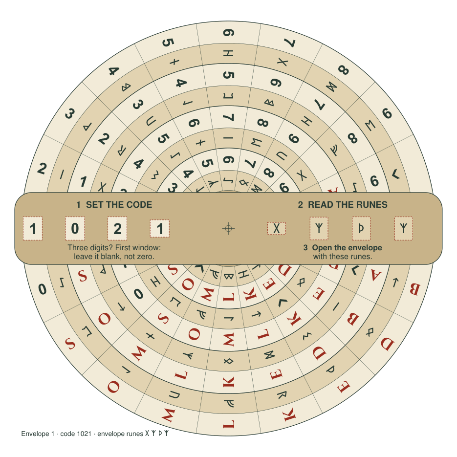

The story
An inheritance with a few things left unsaid.
Liv’s travels connect distant places and the lives of Leif Erikson, Rollo, Aud the Deep-Minded and Harald Hardrada. Her postcards, maps and keepsakes invite you to look closer. Each discovery brings you a little nearer to what she wanted you to find.
- ExploreFour trails through the Norse world
- ExamineIllustrated postcards, maps and curious keepsakes
- UnravelConnected puzzles and a family mystery
- Try it todayOnline playtest · desktop recommended
- Physical editionIn development · not yet available to borrow
Inside the physical edition
Contents & sizes.
Current quantities per game, with planned physical formats. A postcard’s front and back count as one item.
| Item | Qty | Format & size |
|---|---|---|
| Postcards | 22 | Double-sided postcards · 4 × 6 in |
| Trail maps | 4 | Flyers · 5.5 × 8.5 in (planned production size) |
| Museum tickets | 4 | Double-sided bookmarks · 2 × 6 in |
| Travel hop tickets | 18 | Business cards · 3.5 × 2 in |
| Plane ticket | 1 | Business card · 3.5 × 2 in (planned size) |
| Liv’s notes card | 1 | Double-sided postcard · 4 × 6 in |
| Liv’s memo | 1 | Single-sided postcard · 4 × 6 in |
| Raven’s path card | 1 | Business card · 3.5 × 2 in |
| Ruler | 1 | Printed bookmark · 2 × 6 in |
Other props & packaging
| Item | Qty | Format & size |
|---|---|---|
| Cypher wheel | 1 | Assembled card tool · largest disc Ø 196 mm; arm 202 × 34 mm |
| Comb | 1 | Cut card prop · 100.7 × 87.8 mm |
| Coins | 12 | 3D-printed prototype · Ø 28 mm; 2 mm base + 0.6 mm relief |
| Raven medallion | 1 | 3D-printed keepsake · Ø 50 mm × 4.4 mm thick |
| Magnifier | 1 | Fresnel card · 3.3 × 2.2 in |
| Treasure tally | 1 | Card tool · 4 × 2 in sleeve |
| Hnefatafl board | 1 | 11 × 11 grid · physical size to confirm |
| Hnefatafl pieces | 26 | 19 dark, 6 light, 1 king · piece sizes to confirm |
| Rune-marked envelopes | 15 | Mixed sizes · 13 story envelopes + 2 extras; size split to confirm |
| Game box | 1 | Box dimensions to confirm |
Dimensions describe the current physical plan. Some gallery images show earlier prototypes, including larger maps and tickets. Items marked “to confirm” are still being finalised. Quantities are per game, not the number of images shown below.
A glimpse inside
A closer look at Liv’s inheritance.
A selection of the adventure’s postcards and puzzle tools: places to explore, a message from Liv, and objects to examine along the way.
Postcards · art & messages
Five stops on Liv’s travels, with each illustrated front beside its handwritten reverse.


Tools for the journey


Maps, tickets & keepsakes


Select any image to view it in full. These previews include puzzle clues; the wheel shows the opening example. Game materials may evolve during development.
Behind the game
How it was made.
After playing a lot of escape rooms and games, I had the idea for this game in my head for a while (the postcards, the story, the puzzles). I used AI to help bring it to this stage: building tools to help me make props and images, brainstorming ideas, and helping me write the code for the online version and this website.
What comes next
Depending on interest.
Right now the online version is open for playtesting, and your feedback shapes what happens next. Depending on interest, a Kickstarter campaign may be launched to publish a final version of the game.
Follow the first clue
Open Liv’s inheritance.
Try the online playtest and tell us how it goes. Prefer the physical adventure? Request an update while it takes shape.